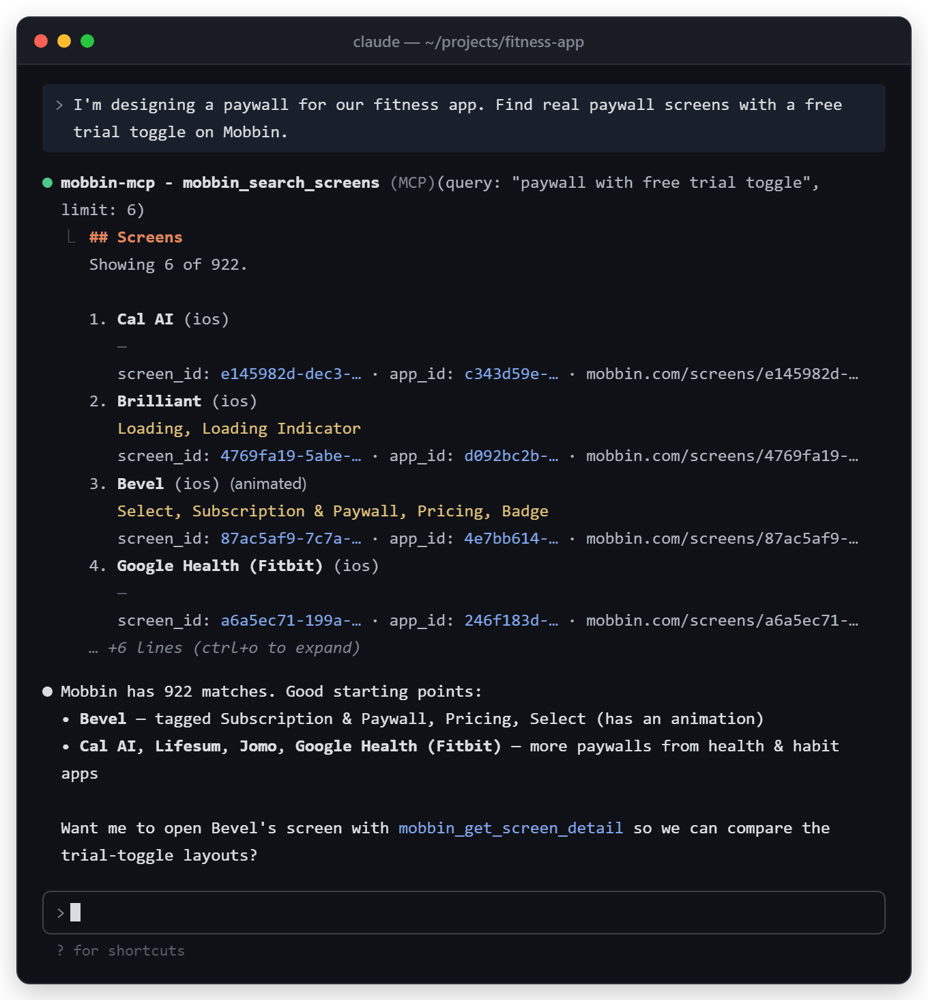
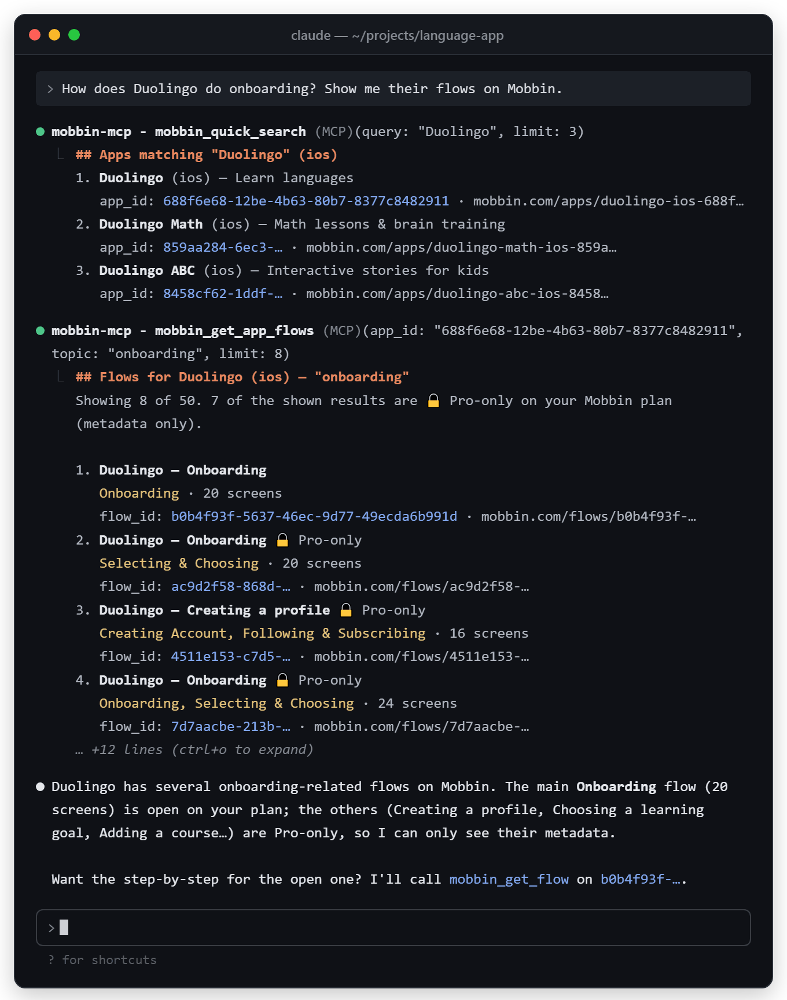
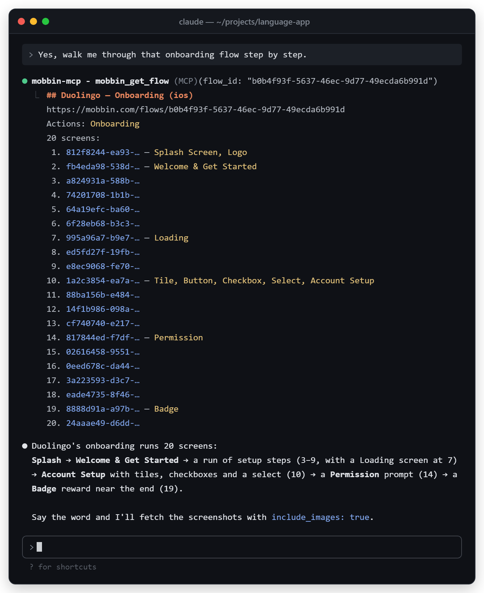
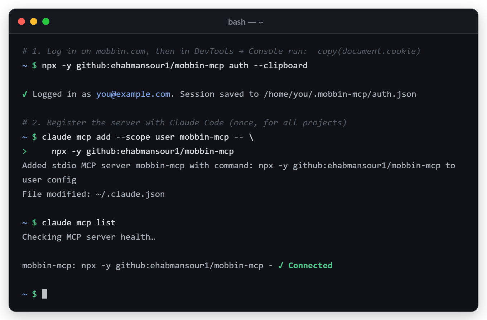
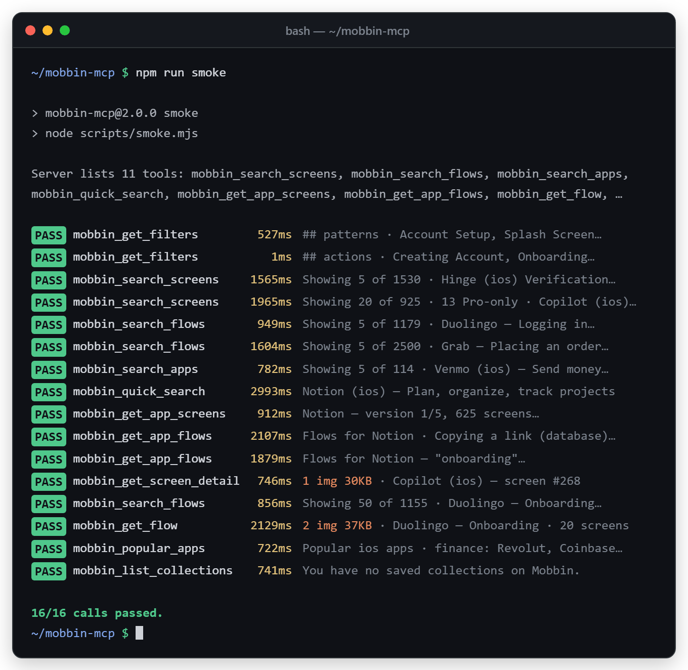

- Unofficial
- Open source · MIT
- TypeScript · Node 20+
Mobbin MCP serverReal app screens & flows, inside your AI assistant
An open-source Model Context Protocol server for Mobbin. Ask Claude, Cursor, VS Code or any MCP client for signup screens, paywalls or a real app's onboarding flow, and it searches Mobbin's library of iOS, Android and web designs for you. It can also pull the screenshots into the chat.
Runs straight from GitHub: npx -y github:ehabmansour1/mobbin-mcp
Design research without leaving the chat
Eleven tools that cover how designers actually use Mobbin: search, browse an app, follow a flow screen by screen, and look at the pixels.
-
Plain-English search
Describe what you need, such as “dark mode settings with toggles”, and Mobbin's AI search finds matching screens and flows.
-
Mobbin's own taxonomy
Filter by screen patterns, UI elements, flow actions and app categories, OCR text in screenshots, or animated screens only.
-
Drill into one app
Find an app by name, list every screen in any version, or pull its onboarding, login and checkout flows.
-
Screenshots the model can see
Screens come back as images the model can see, so it can compare layouts, read the copy and critique them next to your work.
-
Respects your plan
Works on free accounts. Restricted results are labelled “🔒 Pro-only” and shown as metadata only. The paywall is never bypassed.
-
Gentle and self-checking
Sends one request at a time with a 400 ms gap, auto-refreshes your session, and
npm run smoketests every tool against the live API.
Mobbin now has an official MCP server. For anything important, use it: claude mcp add mobbin --transport http https://api.mobbin.com/mcp. This project is an independent, open-source alternative that runs locally and uses Mobbin's undocumented internal endpoints, which can change without notice. Compare the two.
What it looks like in Claude Code
Tool output is real (captured 2026-11-04 on a free Mobbin plan) and trimmed for length; the assistant's replies are illustrative. The login screen uses a placeholder email, the smoke-test previews are condensed, and no Mobbin screenshots are included here. Click any image to open it full size.


mobbin_search_screens returns matching screens from real apps, with their pattern tags and screen IDs you can open next.

mobbin_quick_search finds the app, then mobbin_get_app_flows with topic: "onboarding" lists its flows.

mobbin_get_flow returns the ordered screens with their patterns. Add include_images: true to get the screenshots too.

auth --clipboard, add the server, and claude mcp list shows it connected. Illustrative: the email and home path are placeholders.

npm run smoke calls every tool against the live API and prints PASS or FAIL for each call. All 16 calls passed on 2026-11-04. The previews here are condensed summaries; the real script prints the first 200 characters of each result on its own line.Up and running in three steps
You need Node.js 20+, Git on your PATH (for the npx github: install) and a Mobbin account. A free account works. It is not published to npm: the mobbin-mcp name there was used by the original project, which has since been unpublished, so install from GitHub.
-
Copy your Mobbin session
Log in at mobbin.com, open the browser console (F12 → Console) and run the line below. A cookie-export extension's JSON file works too.
copy(document.cookie) -
Log in once from your terminal
This verifies the session, saves it to
~/.mobbin-mcp/auth.jsonand refreshes it automatically from then on. The first run downloads and builds the server, so give it a minute.npx -y github:ehabmansour1/mobbin-mcp auth --clipboardOther ways:
auth cookies.jsonreads a saved cookie string or JSON export, and plainauthlets you paste interactively. Or skip the file and setMOBBIN_AUTH_COOKIEin your client'senvblock. -
Add it to your AI client and ask
For Claude Code, run the command below. Instructions for other clients are in How to connect.
claude mcp add --scope user mobbin-mcp -- npx -y github:ehabmansour1/mobbin-mcpThen try: “Find real signup screens with Apple and Google sign-in on Mobbin” or “How does Duolingo do onboarding? Show me the flow.”
Prefer a local clone?
Build once, then point any client at node with the absolute path to dist/index.js. This path never needs a cmd /c wrapper on Windows.
git clone https://github.com/ehabmansour1/mobbin-mcp.git
cd mobbin-mcp
npm install
npm run build
node dist/index.js auth --clipboard
npm run smoke # optional: check every tool against the live APIHow to connect Mobbin MCP to your AI client
Every snippet uses the server name mobbin-mcp, so it won't clash with Mobbin's official server, which its docs call mobbin. Log in once first (step 2 above). Replace C:/path/to/mobbin-mcp with your clone's path; in JSON use forward slashes or doubled backslashes.
Claude Code
CLI · claude mcp add
--scope user and the default local scope are stored in ~/.claude.json. --scope project writes a shareable .mcp.json in the project root. Check with claude mcp list.
From GitHub (npx)
claude mcp add --scope user mobbin-mcp -- npx -y github:ehabmansour1/mobbin-mcpLocal clone
claude mcp add --scope user mobbin-mcp -- node C:/path/to/mobbin-mcp/dist/index.jsProject-shared .mcp.json
{
"mcpServers": {
"mobbin-mcp": {
"command": "npx",
"args": ["-y", "github:ehabmansour1/mobbin-mcp"]
}
}
}Windows notes
- Everything after
--goes to the server unchanged. Put--env KEY=valueafter the name and before--. - If the server shows “Connection closed” or
spawn npx ENOENT, run this from PowerShell or cmd:claude mcp add --scope user mobbin-mcp -- cmd /c npx -y github:ehabmansour1/mobbin-mcp. In Git Bash, writecmd //cinstead, because Git Bash rewrites a bare/c.
Claude Desktop
claude_desktop_config.json
Settings → Developer → Edit Config. Files: Windows %APPDATA%\Claude\claude_desktop_config.json, macOS ~/Library/Application Support/Claude/claude_desktop_config.json. Fully quit and restart Claude Desktop after editing.
From GitHub (npx)
{
"mcpServers": {
"mobbin-mcp": {
"command": "npx",
"args": ["-y", "github:ehabmansour1/mobbin-mcp"]
}
}
}Local clone
{
"mcpServers": {
"mobbin-mcp": {
"command": "node",
"args": ["C:/path/to/mobbin-mcp/dist/index.js"]
}
}
}Troubleshooting
Logs are in %APPDATA%\Claude\logs (mcp-server-mobbin-mcp.log). For npx ENOENT or ${APPDATA} errors, make sure npm is installed globally (%APPDATA%\npm exists), or add "env": { "APPDATA": "C:\\Users\\<you>\\AppData\\Roaming\\" } to the entry.
Cursor
~/.cursor/mcp.json
Global: ~/.cursor/mcp.json (Windows %USERPROFILE%\.cursor\mcp.json). Project: .cursor/mcp.json.
From GitHub (npx)
{
"mcpServers": {
"mobbin-mcp": {
"type": "stdio",
"command": "npx",
"args": ["-y", "github:ehabmansour1/mobbin-mcp"]
}
}
}Local clone
{
"mcpServers": {
"mobbin-mcp": {
"type": "stdio",
"command": "node",
"args": ["C:/path/to/mobbin-mcp/dist/index.js"]
}
}
}If npx fails to start on Windows, use "command": "cmd" with "args": ["/c", "npx", "-y", "github:ehabmansour1/mobbin-mcp"].
VS Code · GitHub Copilot
.vscode/mcp.json · uses "servers"
Workspace .vscode/mcp.json, or the user file from the Command Palette: MCP: Open User Configuration. Note that the top-level key is servers, not mcpServers. The tools appear in Copilot Chat Agent mode.
From GitHub (npx)
{
"servers": {
"mobbin-mcp": {
"type": "stdio",
"command": "npx",
"args": ["-y", "github:ehabmansour1/mobbin-mcp"]
}
}
}Local clone
{
"servers": {
"mobbin-mcp": {
"type": "stdio",
"command": "node",
"args": ["C:/path/to/mobbin-mcp/dist/index.js"]
}
}
}One-line install (bash)
code --add-mcp '{"name":"mobbin-mcp","type":"stdio","command":"npx","args":["-y","github:ehabmansour1/mobbin-mcp"]}'In Windows PowerShell 5.1 the inner quotes get stripped, so pasting the JSON into the file is easier.
GitHub Copilot CLI (the copilot terminal app, not VS Code) reads ~/.copilot/mcp-config.json instead. That file uses the mcpServers key with the same entry.
Windsurf / Devin Desktop
mcp_config.json
Windsurf was rebranded as Devin Desktop in June 2026. Open the file from the Cascade panel (… menu → MCPs → open config) to be sure which one your build reads. Devin's docs give ~/.config/devin/mcp_config.json (Windows %APPDATA%\devin\mcp_config.json) and a project file .devin/mcp_config.json. Windsurf builds from before the rename use ~/.codeium/windsurf/mcp_config.json. All of them use the same mcpServers shape.
Devin CLI
devin mcp add -s user mobbin-mcp -- npx -y github:ehabmansour1/mobbin-mcpFrom GitHub (npx)
{
"mcpServers": {
"mobbin-mcp": {
"command": "npx",
"args": ["-y", "github:ehabmansour1/mobbin-mcp"]
}
}
}Local clone
{
"mcpServers": {
"mobbin-mcp": {
"command": "node",
"args": ["C:/path/to/mobbin-mcp/dist/index.js"]
}
}
}Cline
cline_mcp_settings.json
In the Cline panel: MCP Servers icon → Configure → Configure MCP Servers. Cline CLI: ~/.cline/data/settings/cline_mcp_settings.json or the cline mcp wizard.
From GitHub (npx)
{
"mcpServers": {
"mobbin-mcp": {
"command": "npx",
"args": ["-y", "github:ehabmansour1/mobbin-mcp"],
"disabled": false,
"autoApprove": []
}
}
}Local clone
{
"mcpServers": {
"mobbin-mcp": {
"command": "node",
"args": ["C:/path/to/mobbin-mcp/dist/index.js"],
"disabled": false,
"autoApprove": []
}
}
}OpenAI Codex
~/.codex/config.toml
Used by the Codex CLI and the Codex IDE extension. File: ~/.codex/config.toml (Windows %USERPROFILE%\.codex\config.toml).
CLI
codex mcp add mobbin-mcp -- npx -y github:ehabmansour1/mobbin-mcpFrom GitHub (npx)
[mcp_servers.mobbin-mcp]
command = "npx"
args = ["-y", "github:ehabmansour1/mobbin-mcp"]
startup_timeout_sec = 120Local clone
[mcp_servers.mobbin-mcp]
command = "node"
args = ["C:/path/to/mobbin-mcp/dist/index.js"]The default startup timeout is 10 seconds, which is too short for the first npx github: run because it clones and builds the server. That's why the npx example sets startup_timeout_sec = 120.
Gemini CLI
~/.gemini/settings.json
User: ~/.gemini/settings.json. Project: .gemini/settings.json. Note: since June 18, 2026 Google has moved individual (free, AI Pro and AI Ultra) users from Gemini CLI to Antigravity CLI (agy); Gemini CLI remains for enterprise accounts.
From GitHub (npx)
{
"mcpServers": {
"mobbin-mcp": {
"command": "npx",
"args": ["-y", "github:ehabmansour1/mobbin-mcp"]
}
}
}Local clone (CLI)
gemini mcp add -s user mobbin-mcp node C:/path/to/mobbin-mcp/dist/index.jsZed
settings.json · uses "context_servers"
Run the zed: open settings file action. The top-level key is context_servers. Windows path: %APPDATA%\Zed\settings.json.
From GitHub (npx)
{
"context_servers": {
"mobbin-mcp": {
"command": "npx",
"args": ["-y", "github:ehabmansour1/mobbin-mcp"],
"env": {}
}
}
}Local clone
{
"context_servers": {
"mobbin-mcp": {
"command": "node",
"args": ["C:/path/to/mobbin-mcp/dist/index.js"],
"env": {}
}
}
}Continue
.continue/mcpServers/*.yaml
Create .continue/mcpServers/mobbin-mcp.yaml in your workspace. MCP tools only work in Agent mode.
From GitHub (npx)
name: Mobbin MCP
version: 0.0.1
schema: v1
mcpServers:
- name: mobbin-mcp
type: stdio
command: npx
args:
- "-y"
- "github:ehabmansour1/mobbin-mcp"Local clone
name: Mobbin MCP
version: 0.0.1
schema: v1
mcpServers:
- name: mobbin-mcp
type: stdio
command: node
args:
- "C:/path/to/mobbin-mcp/dist/index.js"JetBrains AI Assistant & Junie
IntelliJ, WebStorm, PyCharm…
AI Assistant: Settings → Tools → AI Assistant → Model Context Protocol (MCP) → Add → STDIO, then paste the JSON. Junie: ~/.junie/mcp/mcp.json (user) or .junie/mcp/mcp.json (project).
From GitHub (npx)
{
"mcpServers": {
"mobbin-mcp": {
"command": "npx",
"args": ["-y", "github:ehabmansour1/mobbin-mcp"]
}
}
}Local clone
{
"mcpServers": {
"mobbin-mcp": {
"command": "node",
"args": ["C:/path/to/mobbin-mcp/dist/index.js"]
}
}
}Use the saved login (~/.mobbin-mcp/auth.json) rather than environment variables here.
LM Studio
mcp.json
Right sidebar → Program → Install → Edit mcp.json. LM Studio uses Cursor's mcpServers format. If the file already has servers, add only the "mobbin-mcp" entry.
From GitHub (npx)
{
"mcpServers": {
"mobbin-mcp": {
"command": "npx",
"args": ["-y", "github:ehabmansour1/mobbin-mcp"]
}
}
}Local clone
{
"mcpServers": {
"mobbin-mcp": {
"command": "node",
"args": ["C:/path/to/mobbin-mcp/dist/index.js"]
}
}
}The 11 Mobbin MCP tools
platform is ios, android or web and defaults to ios. Every ID is a UUID returned by another tool. Parameters marked required must be set. The rest are optional, and defaults are shown.
| Tool | What it does | Parameters |
|---|---|---|
mobbin_search_screens |
Search real app screenshots by natural-language query (Mobbin's AI search) or by taxonomy filters. When query is set, the pattern, element and category filters and sort_by are ignored. |
|
mobbin_search_flows |
Search multi-screen user flows such as onboarding, checkout and login, by natural-language query or by flow actions. When query is set, the filters and sort_by are ignored. |
|
mobbin_search_apps |
Browse apps by category, newest first. |
|
mobbin_quick_search |
Find an app by name (autocomplete) and get its app_id. |
|
mobbin_get_app_screens |
List every screen of one app for any version, with pagination. |
|
mobbin_get_app_flows |
List one app's flows, optionally narrowed by a topic such as “onboarding”. |
|
mobbin_get_flow |
Get the ordered screens of one flow with their patterns, and optionally the screenshots as images. |
|
mobbin_get_screen_detail |
Get one screenshot as an image the model can see, plus its app info. |
|
mobbin_popular_apps |
Show the most popular apps on Mobbin, grouped by category. |
|
mobbin_list_collections |
List the collections saved in your Mobbin account. |
|
mobbin_get_filters |
List the exact filter names that the search tools accept. |
|
Typical chain: mobbin_quick_search("Duolingo") → mobbin_get_app_flows(app_id, topic: "onboarding") → mobbin_get_flow(flow_id, include_images: true).
Official Mobbin MCP or this one?
For most people, especially teams and important work, the honest answer is Mobbin's official server. This project is for people who want a local, open-source server they can read and change.
| Official Mobbin MCP | mobbin-mcp (this project) | |
|---|---|---|
| Made by | Mobbin | Ehab Mansour (independent, open source) |
| How it runs | Remote HTTP server at https://api.mobbin.com/mcp | Local stdio process on your machine (Node.js) |
| Setup | claude mcp add mobbin --transport http https://api.mobbin.com/mcp | npx -y github:ehabmansour1/mobbin-mcp plus a one-time cookie login |
| API stability | Supported by Mobbin | Undocumented internal endpoints that can change at any time |
| Terms of service | Mobbin's own product | Automated use may conflict with Mobbin's terms; use your own account at low volume |
| Source code | Hosted service run by Mobbin | MIT-licensed TypeScript on GitHub |
| Best for | Anything important, teams, production workflows | Tinkering, learning how MCP servers work, full local control |
Frequently asked questions
Is this the official Mobbin MCP server?
No. This is an unofficial, community-built project and is not affiliated with or endorsed by Mobbin. Mobbin runs its own official MCP server at https://api.mobbin.com/mcp, and that is the recommended choice for anything important.
Do I need a paid Mobbin plan?
No, a free Mobbin account works. On a free plan Mobbin marks many results as restricted. They appear as "🔒 Pro-only" (metadata only). On any plan, each search returns only the first page of results Mobbin serves, because this server does not paginate. The server does not try to get around the paywall.
Is Mobbin MCP on npm?
No, this project is not published to npm. The mobbin-mcp name was used by the original project, which has since been unpublished, so npx mobbin-mcp will not work. Install this one straight from GitHub with npx -y github:ehabmansour1/mobbin-mcp, or clone the repository and run npm install and npm run build.
How does login work, and where is my session stored?
Log in to mobbin.com in your browser, copy your cookies (copy(document.cookie) in the console, or a cookie-export JSON file) and run the auth command. Only Mobbin's session cookies are used. The session is verified, saved to ~/.mobbin-mcp/auth.json on your machine and refreshed automatically. You can set the MOBBIN_AUTH_COOKIE environment variable instead.
Which AI apps and editors does it work with?
Any client that can run a local stdio MCP server, including Claude Code, Claude Desktop, Cursor, VS Code with GitHub Copilot, Windsurf / Devin Desktop, Cline, OpenAI Codex, Gemini CLI, Zed, Continue, JetBrains AI Assistant, Junie and LM Studio.
Can the AI actually see the screenshots?
Yes, if your model accepts images. mobbin_get_screen_detail returns a screenshot as an image, and mobbin_get_flow returns up to 6 screenshots by default when include_images is true (raise max_images to get up to 12). Images are only fetched from the signed URLs Mobbin itself issues for your account.
What happens if Mobbin changes its API?
The server uses Mobbin's undocumented internal endpoints, which can change at any time. If a route moves, the affected tool reports a 404 with a hint, and npm run smoke shows exactly which tools broke. All 16 live smoke calls passed on 2026-11-04.
Could heavy use get my Mobbin account rate-limited?
The server sends one request at a time with a 400 ms gap and does not retry Mobbin's rate-limit errors. It reports them as plain messages instead. Automated use may still conflict with Mobbin's terms, so use your own account at low volume.
npx fails on Windows with spawn npx ENOENT. What do I do?
Wrap the command in cmd /c, for example "command": "cmd" with "args": ["/c", "npx", "-y", "github:ehabmansour1/mobbin-mcp"]. Or clone the repository and point the client at node with the full path to dist/index.js, which never needs the wrapper.
Disclaimer
Mobbin MCP is an independent, unofficial project. It is not affiliated with, endorsed by or sponsored by Mobbin. “Mobbin” is a trademark of its owner and is used here only to describe what the software works with. The app screenshots and designs on Mobbin belong to their respective owners.
The server uses Mobbin's undocumented internal API (verified 2026-11-04), which can change or stop working at any time, and automated use may conflict with Mobbin's terms of service. Use it with your own account, at low volume, at your own risk. It was inspired by the archived pdcolandrea/mobbin-mcp, which stopped working after Mobbin changed its API, and is a fresh implementation against the current endpoints.